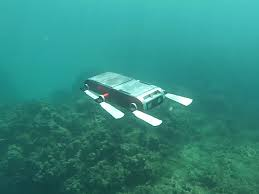

Featured system
AQUA
An aquatic robot capable of both legged locomotion and swimming, designed for operations near the surface and underwater.
Summary
AQUA supports surface and underwater movement, bottom crawling, and controlled motion without thrusters by using six paddles as both control surfaces and walking legs.
Challenge
Creating one platform that can move effectively across different aquatic modes means the locomotion strategy must remain useful above the surface, underwater, and in contact with the bottom.
Approach
The robot uses six paddles as dual-purpose locomotion elements, functioning as swimming control surfaces and as legs for bottom-contact motion. That gives AQUA a distinct approach to mobility compared with thruster-only underwater platforms.
System breakdown
Gallery
Prototype imagery and motion clips.


Lessons learned
Interesting aquatic mobility demands simple, robust mechanisms. AQUA underlines how tightly coupled mechanical design and control behavior become when the same appendages must handle more than one mode of movement.
Outcome
AQUA demonstrates a compelling alternative to traditional aquatic platform design by using one integrated mobility system for swimming and bottom-contact locomotion.
Related link
Project videos best communicate the multi-mode locomotion behavior that defines AQUA.